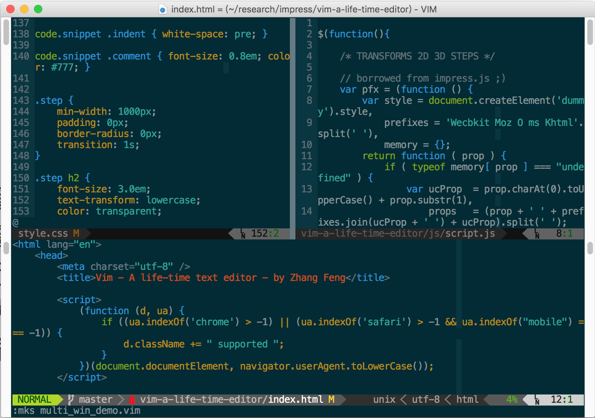
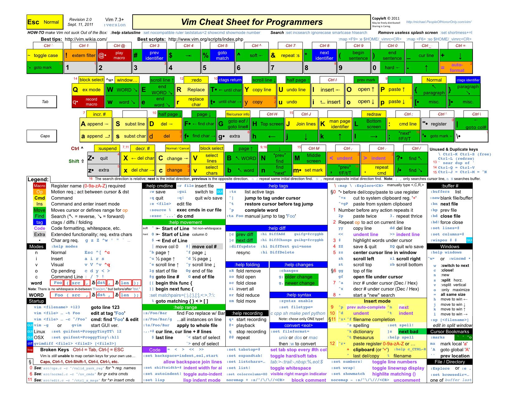
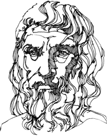

vim
A life-time text editor

简介
Vi IMproved
- Vi改良版本
- 跨平台可定制的高效率文本编辑器
- 由Bram Moolenaar开发并维护
- 一次学习终身受益

简介
软件开发技术变迁
- Assembly -> Procedural -> OO -> Functional
- EJB/JSP/Servlet -> SSH -> SPA
- jQuery -> AngularJS -> ReactJS
- J2ME/Windows Mobile -> Android/iOS + H5
简介
优点
- 高效率
- 和操作系统深度整合
- 可扩展
缺点
- 学习难度大
简介
和其它编辑器比较
- GNU Emacs
- Sublime
- UltraEdit
Generally Not Use, Except by Mid-Aged Computer Scientists
简介
基本概念
- 界面
- 模式
- 移动
- 操作
- 文本对象
- 寄存器
- 标记
- 宏
基本概念
界面
- 缓冲区(buffer)
- 窗口(window)
- 标签(tab)
- 状态栏(status line)
- 命令行(command line)
基本概念
模式
- normal
- insert
- visual
- visual block
基本概念
移动
- 字: j, k, l, h
- 词: w, W, b, e
- 段: {, }
- 单字符搜索: f, F, t, T
- 模式搜索: /, ?
- :help motion
基本概念
操作
- insert/append/new line(i/I a/A o/O)
- change(c/C)
- delete(d/D)
- copy(y)
- paste(p/P)
- indent(</>)
- :help operator
基本概念
文本对象
- 词(w)
- 句(s)
- 段(p)
- 块({} [] () <>)
- XML/HTML标签(t)
- 自定义
- :help textobjects
基本概念
寄存器
- 9类寄存器
- 存放寄存器使用"[a-z]ymotion
- 复制寄存器内容使用"[a-z]p
- +寄存器相当于Windows上剪切板
- 查看寄存器使用:reg命令
- :help registers
基本概念
标记
- 在正常模式用m命令记录标记
- 引用标记使用单引号"'"则跳转到标记所在行首个非空字符
- 引用标记使反单引号"`"则跳转到标记所在行和列
- :help mark
基本概念
组合规则
- 基本语法: 重复次数 操作 范围 文本对象
组合使用示例
- 5dap
- 2>i{
- cit
- yi"
基本概念
宏
- 录制一系列命令的组合
- 可以多次回放以减少重复的键盘输入
- 正常模式使用q加寄存器名称开启录制模式
- 录制的宏可以作为普通文本一样编辑
参考资料
Vim自带文档
- :help user-manual
- vimtutor
书
在线视频
参考资料


Epicurus advice:
Epicurus advice:
Quit procrastinating & learn vim
Γεγόναμεν ἅπαξ, δὶς δὲ οὐκ ἔστι γενέσθαι
δεῖ δὲ τὸν αἰῶνα μηκέτι εἶναι
σὺ δὲ οὐκ ὢν τῆς αὔριον κύριος ἀναβάλλῃ τὸ χαῖρο
ὁ δὲ βίος μελλησμῷ παραπόλλυται καὶ εἷς ἕκαστος ἡμῶν ἀσχολούμενος ἀποθνῄσκει.